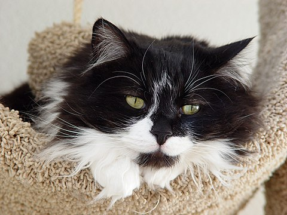
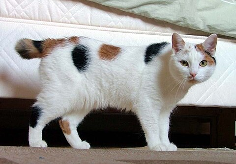
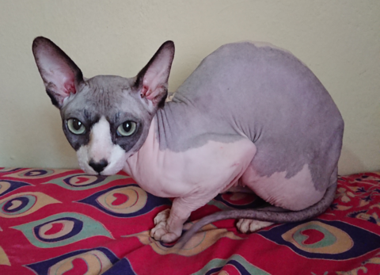
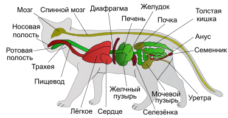
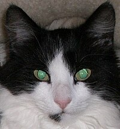
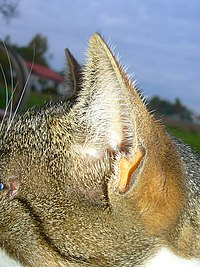
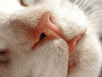

Породы кошек
Породы кошек можно разделить на длинношёрстные и короткошёрстные. Внутри каждой группы форма и
размер
головы и ушей, строение тела, цвет и длина волос, цвет и форма глаз, а также особые отметины, такие как
полосы и
цветовые вариации на лапах, хвосте, морде и шее, отличают породы друг от друга.

Длинношёрстные
Персидская кошка, высоко ценимая любителями кошек, имеет круглое тело, морду, глаза и голову с
коротким носом и
ногами. У обладателей данной породы шерсть длинная и пушистая, хвост пушистый. Персы варьируются от
чёрного до
белого, кремового, голубого, красного, голубо-кремового, черепахового, дымчатого, серебристого,
полосатого,
ситцевого, оловянного, шоколадного и сиреневого. Другими популярными длинношёрстными кошками
являются балийцы,
рэгдоллы, турецкие ангорцы и мейн-куны.

Короткошёрстные
Среди короткошёрстных кошек популярны мэнская, британская короткошёрстная, американская
короткошёрстная,
абиссинская, бирманская, сиамская.

Бесшерстные
К данному виду относятся сфинксы, получившие начало выведенния от котенка-мутанта в 1966 году, как
правило не
имеют даже усов. Породы так называемых «голых кошек», таких как канадский сфинкс, донской сфинкс,
петерболд,
также появились в результате генетических мутаций, закреплённых заводчиками в ходе многолетней
племенной
работы.
По статистике, бесшёрстные котята рождаются один раз в несколько лет. К примеру, современная
популяция
канадских
сфинксов основывается на котятах беспризорной кошки, появившихся в 1976 г. Донской сфинкс берёт
начало
от кошки
Варвары, найденной на улице в Ростове-на-Дону. В отличие от канадского сфинкса, механизм
наследования
бесшёрстности у донского сфинкса доминантный. При создании бесшёрстного украинского левкоя
использовались кошки
следующих пород: донской сфинкс, петерболд, ориентальная, скоттиш-фолд, персидская. Некоторые породы
кошек,
такие как тайская или ангорская, считаются естественными или аборигенными породами домашней кошки,
так
как были
выведены на основе кошек изолированных популяций из районов их происхождения.
Во всем мире признано более 100 различных пород кошек, которые подразделяются на пять больших групп:
персидские длинношёрстные;
остальные длинношёрстные кошки;
британские короткошёрстные кошки;
американские короткошёрстные кошки;
ориентальные короткошёрстные кошки.
Породистыми считаются кошки, обладающие определёнными чертами или свойствами, присущими одной из
зарегистрированных пород, которая признаётся одной из фелинологических организаций. Различные
фелинологические
организации признают разное количество пород кошек. Так, Livre Officiel des Origines Félines признаёт 74
породы
кошек, The Governing Council of the Cat Fancy — 35, Cat Fanciers’ Association — 50, The Cat Association —
63,
World Cat Federation — 62, а Fédération Internationale Féline — 42. Каждая фелинологическая организация
имеет
своё представление о признанной ею породе, что закреплено в специальном описании, которое называется
стандартом
породы. Как правило, у породистой кошки имеется документ о происхождении (родословная), выданный
фелинологическим клубом, который подтверждает принадлежность родителей данного животного к определённой
породе и
их соответствие стандарту этой породы. Среди общего числа кошек менее одного процента животных являются
породистыми и могут участвовать в выставках кошек — показах-соревнованиях по выставочным классам,
предусмотренным для породистых кошек. Беспородные кошки также могут участвовать в выставках, но по классу
домашних любимцев. Запрещаются вязки кошек одной породы с кошками другой породы (ауткроссы), за исключением
тех
пород, процесс образования которых ещё не завершён.
Разнообразие пород домашней кошки — результат многолетней селекции и, в меньшей степени, случайных
генетических
мутаций. К примеру, экзотическая кошка на начальных этапах формирования породы была создана в результате
вязки
длинношёрстной персидской и британской короткошёрстной кошки, в то время как такие породы, как бесхвостый
мэнкс
или коротконогий манчкин, являются результатом генетических мутаций.
Так, например, для пород девон рекс, корниш рекс и селкирк рекс характерным признаком является вьющаяся
шерсть,
для пород мэнкс, японский бобтейл, курильский бобтейл и карельский бобтейл — короткий хвост в форме помпона.
Шотландская вислоухая кошка является породой, у которой уши загнуты вперёд и вниз. А американский кёрл
отличается тем, что у него уши загнуты назад.
Некоторые гибридные породы (например, бенгальская кошка или хауси), являющиеся гибридами домашней кошки и
мелких
диких кошек, произошли в результате вязки домашней кошки и особью одного из диких видов. Гибриды домашней
кошки
отличаются тем, что коты, являющиеся гибридами первых 3-5 поколений, не имеют потомства. Порода бенгальская
кошка выведена путём скрещивания дикой бенгальской кошки и домашней. Порода домашних кошек саванна является
результатом скрещивания сервала и домашней кошки.
Здоровье кошки
Длительность жизниДомашние кошки
Средний срок жизни кошек составляет 14 лет. Вместе с тем, известен случай, когда кошка по кличке Крим
Пафф
дожила до 38 лет. На январь 2011 года самой старой считалась кошка Люси. Она жила в британской семье и
отметила своё 39-летие. Как рассказал владелец животного Билл Томас, кошка появилась на свет в 1972
году.
Представители Книги рекордов Гиннесса официально признали, что кошка Люси — самая старая
представительница
своего вида в мире.
Кастрация котов и стерилизация кошек благоприятно сказывается на их здоровье, так как у котов-кастратов
не
может развиться рак семенников, а у стерильных кошек — рак матки или рак яичников, кроме того и у котов
и у
кошек снижается риск заболевания раком молочных желёз. Стерилизация кошек до первой течки является
профилактикой рака молочной железы. Однако кастрированные коты часто страдают мочекаменной болезнью и
подвержены ожирению. Ранняя кастрация (в возрасте меньше 8—9 месяцев) может приводить к развитию
мочекаменной болезни.
Бездомные кошки
Срок жизни бездомных кошек трудно определить точно. Однако, согласно одному исследованию, средний
возраст
таких животных составляет 4,7 лет, при том, что часть бродячих кошек погибает, ещё будучи котятами, хотя
некоторые могут дожить и до 10 лет. В условиях современного города бродячие кошки живут обычно не более
двух
лет, однако в управляемых колониях бродячие стерилизованные кошки могут жить гораздо дольше. По
сообщениям
Британского кошачьего попечительского фонда (British Cat Action Trust), самой старой из известных
бродячей
кошке было 19 лет. Самым старым бродячим котом был 26-летний Марк, состоявший на попечительстве у
Благотворительного союза защиты кошек.
Болезни кошек
У кошек могут быть различные проблемы со здоровьем, включая болезни различного характера, наличие
паразитов,
травмы и генетические расстройства. Среди болезней кошек выделяют инфекционные (в том числе
респираторные) и
внутренние неинфекционные, а также хирургические и акушерско-гинекологические болезни кошек. Отдельную
группу составляют инвазионные (паразитарные) болезни кошек, к которым относятся различные гельминтозы
кошек.
По данным специалистов, в частности Колледжа ветеринарной медицины Корнеллского университета, кишечные
паразиты являются общей проблемой здоровья у кошек, 45 % кошек, как правило, заражены гельминтами,
такими
как Ollanulus tricuspis, Physaloptera, Ancylostoma и Uncinaria, а также паразитическими простейшими —
Giardia (лямблии), Isospora (кокцидий). Круглые черви Toxascaris leonina и Toxocara cati по оценкам
специалистов имеют распространённость от 25 % до 75 %, а зачастую и выше, у котят. Некоторые виды
ленточных
червей, которые заражают кошек, могут вызывать заболевания и у людей, если не соблюдается гигиена.
К наиболее распространённым заболеваниям кошек относят: калицивироз, микроспорию, панлейкопению,
ринотрахеит, сахарный диабет, токсоплазмоз и кошачий хламидиоз. Одним из наиболее опасных заболеваний у
кошек, которым может инфицироваться и человек, является токсоплазмоз. «Профилактика токсоплазмоза
затруднена, так как меры, обеспечивающие предотвращение заражения кошек и человека, сложно применимы на
практике. Животные, которые охотятся на мышей или получают в рационе сырое мясо (25 % продаваемого мяса
заражено токсоплазмозом), наверняка окажутся инфицированными».
Кошки, как и многие другие млекопитающие, могут болеть бешенством, а также инфицировать им человека.
Кошке
заболевание передаётся через укус больного животного (например, лисы). Инкубационный период длится от 2
до
24 недель, но в большинстве случаев симптомы появляются на 4—6 неделе, животное погибает на 3—4 день их
проявления.
Профилактическая вакцинация способна снизить риск заболевания бешенством и другими инфекционными
заболеваниями кошек. Однако в последнее время специалисты пришли к выводу, что проблема вакцинации кошек
нуждается в дальнейших исследованиях. С одной стороны, профилактическая вакцинация кошек может
предотвратить
многие из инфекционных болезней, а также предотвратит заражение опасными инфекциями владельца животного
и
членов его семьи. С другой стороны, было установлено, что в некоторых случаях вакцинация, особенно
вакцинами
против вируса лейкемии кошек и вируса бешенства, провоцирует заболевание кошек саркомой, в связи с чем
предлагается снизить до минимума вакцинацию кошек
Биология
Нормальные физиологические показатели
Температура тела +38,6 °C
Частота сердечных сокращений 110—140 ударов
в минуту
Частота дыхания 16—40 вдохов в минуту
Нормальная внутренняя (ректальная) температура тела взрослой кошки составляет +38…+39,5 °C, у котят она
несколько выше. У бесшёрстных пород кошек внутренняя температура тела такая же, как и у всех кошек, однако
из-за
отсутствия шёрстного покрова на теле кошки температура кожных покровов у сфинксов или петерболдов человеком
тактильно воспринимается как более высокая.
Частота пульса у взрослых кошек варьирует в зависимости от физической и психической активности и составляет
от
120 до 220 ударов в минуту. Частота дыхания составляет в среднем 20—40 дыхательных движений в минуту.
У кошек выделены три группы крови — А, B и АВ. Кошки с группой крови А могут иметь антитела к группе крови
В, и
наоборот. Кошки с группой крови АВ не имеют антител ни к группе крови А, ни к группе В, поэтому они могут
быть
реципиентом обеих групп крови при переливании. Группа крови АВ самая редкая, она встречается у 1 % всех
домашних
кошек и поэтому остаётся малоизученной, однако учёным удалось установить, что АВ по своему происхождению не
связана с группами крови А и В.
Механизм лакания жидкости кошкой состоит в том, что её язык вытягивается со скоростью 1 м/с, подгибается
вниз и
касается поверхности жидкости, но, в отличие от лакания собак, не проникает в неё. Затем язык устремляется
вверх
и увлекает за собой столбик жидкости. Кошка заглатывает жидкость в тот момент, когда вертикальная
составляющая
скорости жидкости замедляется гравитацией и становится равной нулю. В этот момент челюсти кошки смыкаются, и
жидкость проглатывается. Этот процесс повторяется с периодичностью 4 раза в секунду.

Анатомия
Средняя длина тела кошки без хвоста 60 см, длина хвоста 25—35 см. Как правило, самки меньше самцов,
как
и у прочих млекопитающих (явление полового диморфизма). Самая крупная кошка, согласно «Книге
рекордов
Гиннесса», достигает в длину 121,9 см.
Вес средней здоровой кошки составляет 2,5—6,5 кг, но встречаются и более крупные экземпляры, вес
которых
достигает 7—9 кг. Коты пород сибирская кошка и мейн-кун могут достигать веса 11,5—13 кг. Кошки могут
достигать массы 20 кг, а самый тяжёлый кот имел вес 21,3 кг. Обычно сравнительно большой вес кошки
является следствием ожирения.
Кошка является типичным мелким хищником с характерными особенностями анатомии. Скелет кошки
сформирован
примерно из 240 костей и состоит из двух отделов: осевого и периферического. Осевой отдел скелета
представлен черепом, позвоночником и грудной клеткой. Периферический скелет или скелет конечностей
состоит из 2 грудных (передних) и 2 тазовых (задних) конечностей.
Череп и позвоночник предохраняют центральную нервную систему (головной и спинной мозг) от
повреждений.
Позвоночник кошки состоит из 7 шейных, 13 грудных, 7 поясничных позвонков, 3 сросшихся крестцовых и
20—26 хвостовых позвонков. К позвонкам прикреплены 13 пар рёбер. Рёбра вместе с грудными позвонками
и
грудиной образуют грудную клетку. Первые 9 пар рёбер соединены непосредственно с грудной костью,
остальные 4 пары свободны. Кости передних конечностей соединены с грудной клеткой соединительной
тканью
и мышцами.
Череп кошки отличается от черепов других млекопитающих очень большими глазницами и мощными и
специализированными челюстями, а также приблизительно одинаковым развитием лицевого и мозгового
отделов.
Мозговая часть черепа кошки состоит из 11 костей, а лицевая из 13. Мозг средней кошки имеет размер 5
см
в длину и весит 30 г.
У кошки 30 зубов (16 на верхней челюсти и 14 на нижней)[62], из них 12 резцов, 4 клыка, 10
премоляров и
4 моляра. Зубы кошки приспособлены для убийства добычи и разрывания мяса. Поймав добычу, кошка
наносит
ей укус двумя длинными клыками, вонзая их между двумя позвонками жертвы, тем самым перерезая спинной
мозг жертвы, что приводит к необратимому параличу и смерти. Зубная формула кошки типична для
кошачьих
Отличительная черта строения глаза кошки, характерная для многих млекопитающих — наличие мигательной
перепонки (так называемое третье веко) — тонкой складки конъюнктивы, которая выдвигается из
внутреннего
угла глаза и выполняет защитную функцию. Она очищает поверхность видимой роговицы глаза от пыли и
смачивает её. Третье веко можно увидеть, когда кошка спит с приоткрытыми глазами или чувствует
усталость. Если третье веко видно постоянно, в том числе, когда кошка бодрствует, это в большинстве
случаев может быть признаком болезни.
Шерсть кошки имеет свойство наэлектризовываться от трения, поэтому при чистке щёткой и расчёсывании
слегка увлажняют шерсть или щётку. Накопление статического электричества может происходить постоянно
при
нахождении кошки в слишком сухой атмосфере, в таких случаях применяют увлажнители воздуха.
Неизученные области
Одной из неизученных областей анатомии кошек является карман Генри на их ушах. На данный момент его
функциональное назначение неизвестно.
Органы чувств
По мнению многих зоологов, среди млекопитающих органы чувств наиболее развиты у кошек. Хотя слух у них
развит
хуже, чем, например, у мышей, превосходные (по человеческим меркам) зрение, обоняние и слух в сочетании с
тактильными и вкусовыми рецепторами делают кошек очень чувствительными животными.

Зрение
Среди домашних животных у кошки самые большие глаза относительно размеров тела.[источник не указан
3015
дней] Как и у большинства хищников, глаза кошки направлены вперёд, и их зрительные поля
перекрываются.
Поэтому кошки обладают стереоскопическим зрением, позволяющим оценивать расстояние до предмета
наблюдения. Около 60 % кошек способны к движениям глаз, при которых зрительные оси сходятся и
расходятся. Поле зрения у кошек составляет 200°, против 180° у человека. В жёлтом пятне на сетчатке
глаза у кошек отсутствует центральная ямка (fovea), а вместо неё имеется диск[источник не указан 961
день], где находятся колбочки. Палочек в сетчатке глаза в 25 раз больше, чем колбочек, это
обусловлено
тем, что кошка является ночным хищником, поэтому способность видеть при слабом освещении (за которую
отвечают именно палочки в сетчатке) является для неё приоритетной.
Кошки умеют различать цвета, но по сравнению с человеком восприятие цвета у них слабее — менее
контрастное и яркое. У кошек (как и большинства других млекопитающих, кроме приматов) есть два типа
колбочек — чувствительные к более длинноволновому и коротковолновому свету. «Длинноволновые»
колбочки
кошки содержит опсин, имеющий максимум поглощения в области 553 нм. Считается, что у большинства
млекопитающих отсутствуют «зелёные» колбочки (соответствующие средневолновым колбочкам приматов),
поэтому их цветовое зрение напоминает таковое у человека при дейтеранопии (разновидность
дальтонизма).
Замечено, что неподвижные и близко стоящие предметы кошка воспринимает хуже, чем движущиеся. У кошек
способность к фокусировке зрения на предметах в 2—3 раза меньше, чем у высших обезьян и человека.
Кошки превосходно видят в условиях слабого освещения. За сетчаткой глаза располагается особый слой —
тапетум, который у кошек, как и у большинства животных, содержит большое количество люминесцентного
пигмента (tapetum lucidum). Функция тапетума заключается в отражении обратно на сетчатку той части
света, которая проходит сквозь полупрозрачный слой светочувствительных клеток и которая без тапетума
безвозвратно терялась бы. Благодаря тапетуму и другим механизмам светочувствительность глаза кошки в
7
раз выше, чем у человека, и кошки могут хорошо видеть даже при слабом освещении, но при ярком свете
они
видят хуже человека. Из-за интенсивной пигментации тапетума кошачьи глаза при их освещении в темноте
светятся жёлто-зелёным.
Пигментация тапетума тесно связана с пигментацией радужной оболочки. У голубоглазых кошек (так же,
как и
у собак), независимо от цвета шерсти, тапетум пигментирован слабо и их зрачки отсвечивают красным
цветом
и менее ярко — как у человека (tapetum nigrum). Это позволяет предположить, что ночное зрение
голубоглазых кошек такое же слабое, как у человека. Котята рождаются голубоглазыми, то есть со слабо
пигментированной радужкой и, соответственно, со слабо пигментированным тапетумом. Примерно к
3-месячному
возрасту, когда у желтоглазых и зеленоглазых кошек радужка насыщается пигментом, пигментируется и
тапетум. Оттенок свечения зрачков также зависит от угла падения света, так как пигментация тапетума
снижается по направлению от задней стенки глазного яблока к передней и его оттенок меняется
градиентом:
жёлто-зелёный, бирюзовый, голубой, синий, фиолетовый, красный, чёрный. Но при фронтальном ракурсе у
кошек с хорошо пигментированной радужкой зрачки светятся жёлто-зелёным цветом.
Вопреки распространённому заблуждению, в абсолютной темноте кошки видеть не могут.
Чтобы уменьшить световой поток на сетчатке при ярком освещении, зрачок кошачьего глаза может
изменять
форму. Причём он не круглый, как у человека, а вертикально-овальный вплоть до щелевидного, так как
радужная оболочка сжимается с помощью мышечных волокон неравномерно; такими же способностями
обладают
глаза у лис, относящихся к семейству псовых. Радужная оболочка служит диафрагмой, регулируя
количество
света, проникающего внутрь глаза.

Слух
Орган слуха домашней кошки подразделяется на три отдела — наружное ухо, среднее ухо и внутреннее
ухо,
откуда импульсы поступают в центры слуха в головном мозге.
Кошки обладают направленным слухом, то есть шумы сортируются по направлению. Кошки могут двигать
ушной
раковиной в сторону источника звука, причём каждой ушной раковиной независимо друг от друга, поэтому
кошка может следить одновременно за двумя источниками звука. Этими движениями управляют более
десятка
мышц, благодаря чему ушная раковина может поворачиваться почти на 180°. При этом кошка обладает
способностью пространственного слуха — может распознать силу звука, его удаление и высоту, и на
основании этих данных очень точно оценить месторасположение его источника. Слух кошек настолько
хорошо
развит, что они в состоянии с закрытыми глазами ориентироваться в пространстве на шорох и писк и
ловить
пробегающих мимо мышей; слух человека не в состоянии столь точно позиционировать месторасположение
источника шума[источник не указан 961 день].
Кошки могут воспринимать ультразвуковые сигналы. Диапазон слышимых звуков у кошки ещё недостаточно
изучен; по некоторым данным, он заключён между 45 Гц и 64 000 Гц, по другим данным доходит до 100
000
Гц[источник не указан 961 день]. У кошки нет органа, который производит ультразвук, поэтому кошки не
используют для общения ультразвук, недоступный нашему восприятию, однако они способны слышать
ультразвук, чем пользуются во время охоты, так как ультразвуковое общение грызунов происходит в
промежутке 20—50 кГц, в то время как кошки способны слышать ультразвуки до 65—70 кГц. В ухе кошки
около
13 тысяч воспринимающих клеток, что несколько меньше, чем у человека, однако у кошки около 52 000
передающих нервных окончаний в слуховом нерве, тогда как у человека их значительно меньше — 31
000[источник не указан 961 день].
Осязание
Осязательные функции у кошек выполняют особые тактильные (осязательные) волоски, расположенные с двух сторон
в
четыре ряда над верхней губой, над глазами, под подбородком — вибри́ссы (в обиходе — усы), а также
чувствительные волоски на хвосте, на внутренней и тыльной стороне конечностей (запястные волоски), на
подушечках
лап, между пальцев, на кончиках ушей и в ушах. Ни в коем случае нельзя кошке удалять вибриссы, так как этим
она
фактически будет лишена своей «системы ориентации и навигации» в пространстве. Опытным путём было
установлено,
что чем слабее зрение у кошки, тем длиннее и толще у неё вибриссы, а у кошек, которые родились с нарушением
зрения, вибриссы превышают 8 см. Вибриссы также показывают настроение животного: направленные вперёд усы
часто
означают любопытство или настороженность, в то время как при агрессии кошка прижимает усы к морде, хотя и
умиротворённая, мурлыкающая кошка тоже прижимает усы к щекам.
Кожное осязание у кошек сильно развито.

Обоняние
У кошек сильно развито обоняние, что объясняется наличием у них хорошо развитой обонятельной
луковицы и
большого количества сенсорных клеток обонятельного эпителия носовой полости. У кошек поверхность
обонятельного эпителия составляет 5,8 см², что в два раза больше, чем у человека, и только в 1,7 раз
меньше, чем у средней собаки. Благодаря этому обоняние у кошек примерно в 14 раз сильнее
человеческого,
что позволяет им чувствовать запахи, о которых человек даже не подозревает. В верхней части полости
рта
у кошек расположен вомероназальный орган, который позволяет им чувствовать особо тонкие запахи при
вынюхивании. При этом кошка приоткрывает пасть и втягивает губы, собирая кожу на голове в
своеобразную
гримасу, демонстрируя т. н. реакцию флемена, присутствующую также у собак, лошадей и некоторых
других
млекопитающих[источник не указан 961 день].
Кошки также очень чувствительны к кошачьим феромонам, таким, как образующийся при деградации
синтезируемой кошками аминокислоты фелинина 3-меркапто-3-метилбутан-1-ол, которые они используют для
общения между собой, разбрызгивая мочу и метя свою территорию с помощью выделений из пахучих желёз.
Пахучие железы котят начинают производить пахучие вещества с возраста трёх месяцев. Также кошки
вместе с
экскрементами выделяют небольшое количество пахучей жидкости из анальных желёз. Такие железы есть у
многих хищных, в частности, у скунсов они используются для самообороны.
Восприятие вкуса
Кошки хорошо ориентируются во вкусах, различают кислое, горькое и солёное. Разборчивость эта обусловлена,
прежде
всего, хорошим нюхом и развитыми вкусовыми рецепторами на языке. Долгое время считалось, что в отличие от
большинства млекопитающих кошки не воспринимают сладкое, поскольку соответствующий ген у них повреждён,
однако
последние исследования опровергли эту информацию.
Вестибулярный аппарат
За чувство равновесия у кошек отвечает хорошо развитый вестибулярный аппарат, расположенный во внутреннем
ухе.
Кошки могут безбоязненно передвигаться по конькам крыш, заборам и сучьям деревьев. При падении они могут
рефлекторно принять в воздухе положение, нужное для приземления на лапы. При этом функцию стабилизатора
выполняет очень подвижный хвост (у бесхвостых кошек стабилизатором выступает всё тело). Дополнительным
предохраняющим средством служит рефлекторное расставление лап в стороны, в результате чего поверхность тела
кошки увеличивается, и срабатывает «эффект парашюта». Однако в случае падения с большой высоты (из окон
многоэтажных домов) этот рефлекс не всегда срабатывает, и животное может разбиться, что связано с эффектом
«шока» при выпадении из окна. При падении с малой высоты (например, с рук ребёнка) времени на разворот может
быть недостаточно, и кошка также может травмироваться. Как показали новые исследования, при падении с
большой
высоты кошки приземляются не на лапы, а скорее на живот. В 1976 году ветеринарным врачом из Нью-Йорка
Гордоном
Робинсоном был описан так называемый «высотный синдром кошек[en]» , согласно которому: «чем выше здание, с
которого упала кошка, тем меньше повреждений получит животное. То есть, как ни парадоксально, 15-й этаж
безопаснее 2-го». Математиком Ричардом Монтгомери была разработана теория, получившая название «теоремы
падающей
кошки», согласно которой, кошка, падающая спиной вниз, переворачивается спиной вверх, даже если кинетический
момент равен нулю.